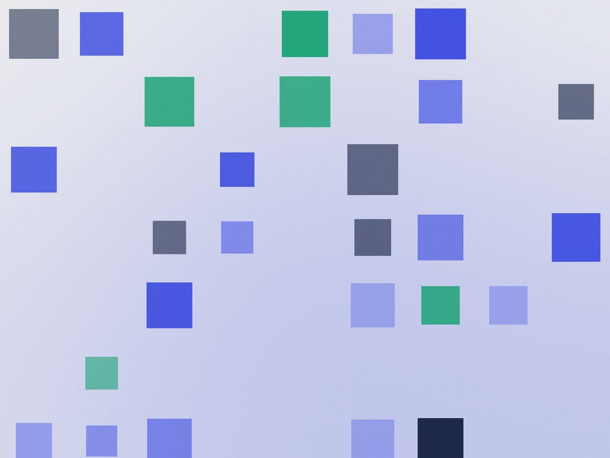
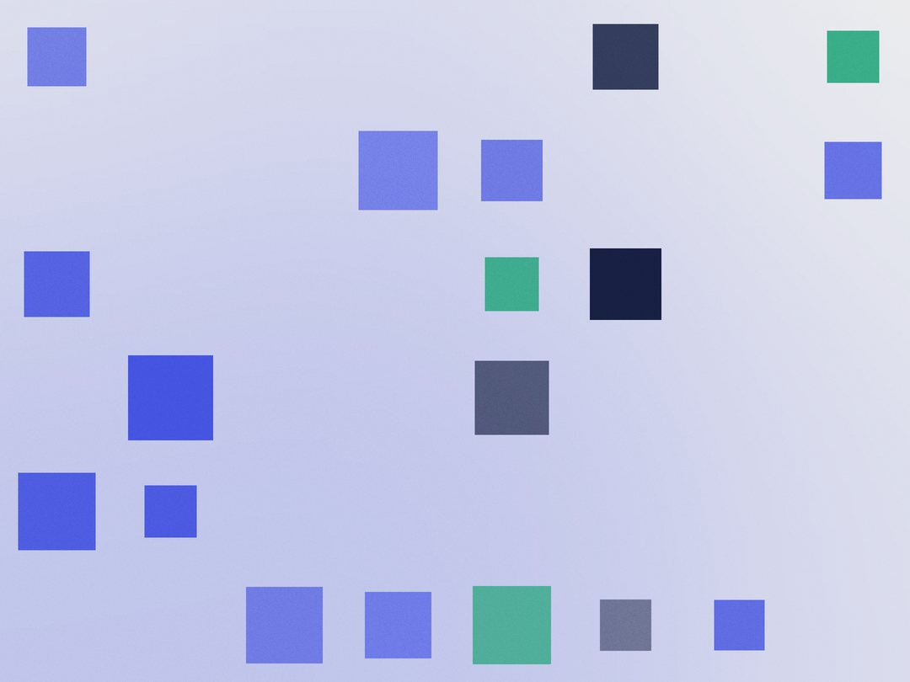
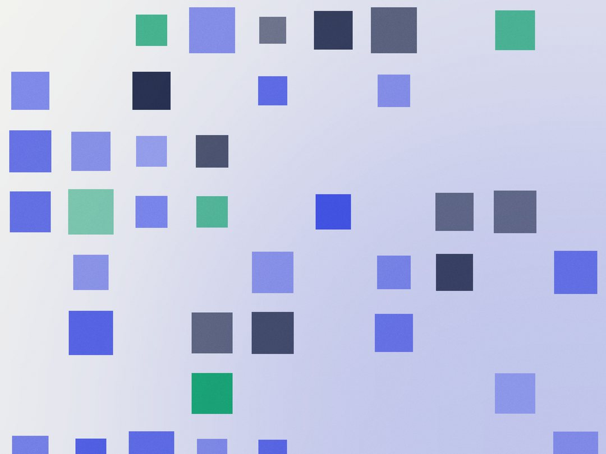
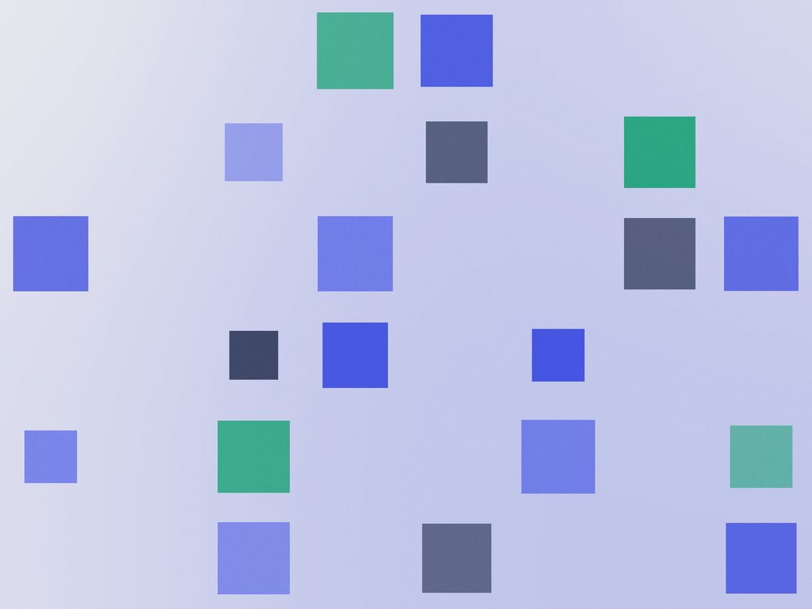
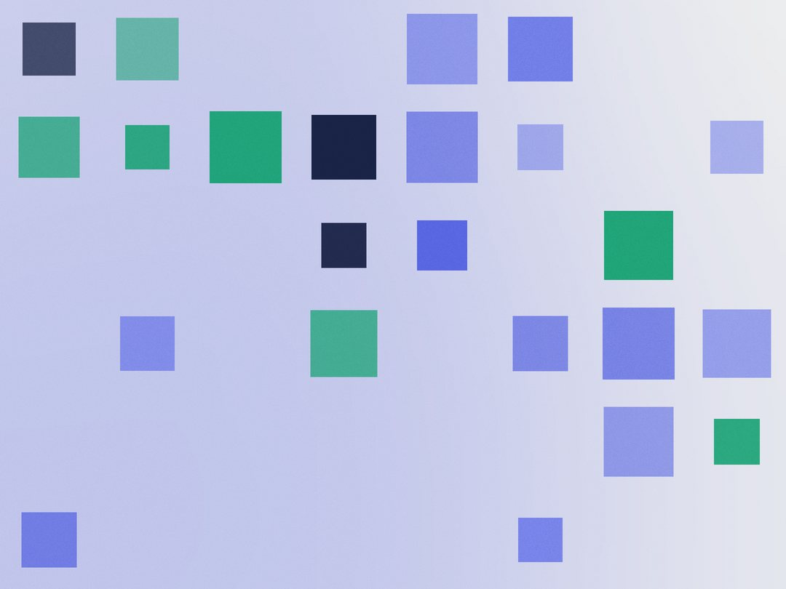
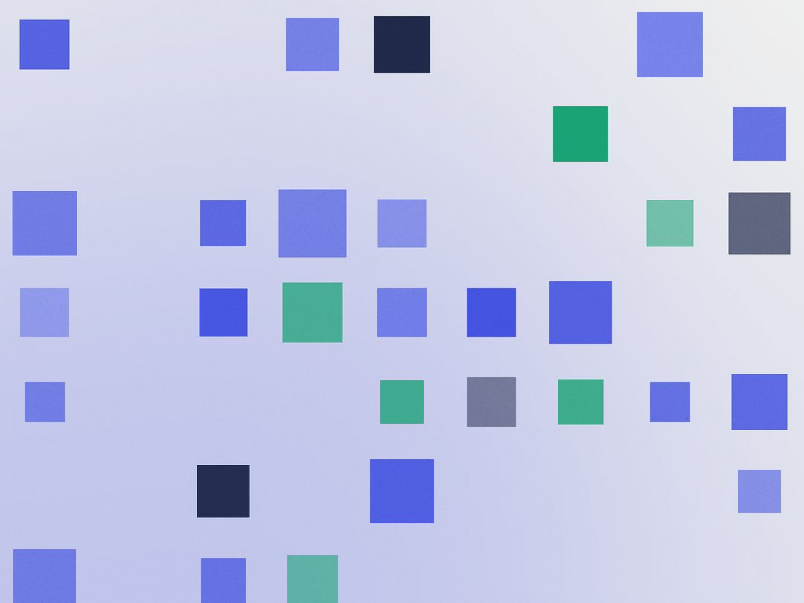
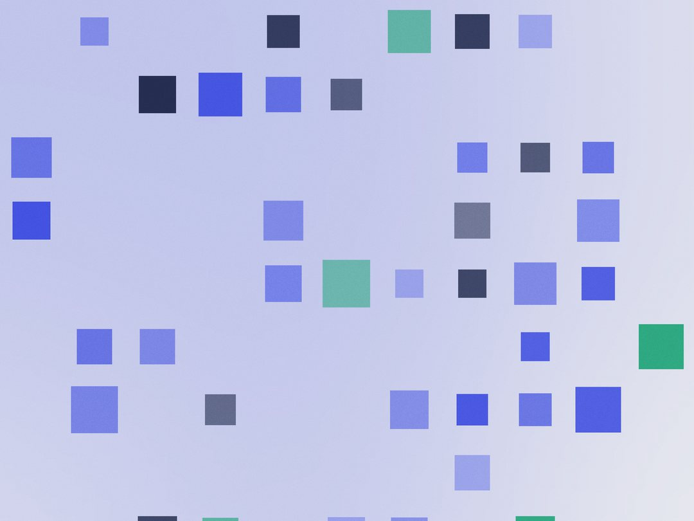
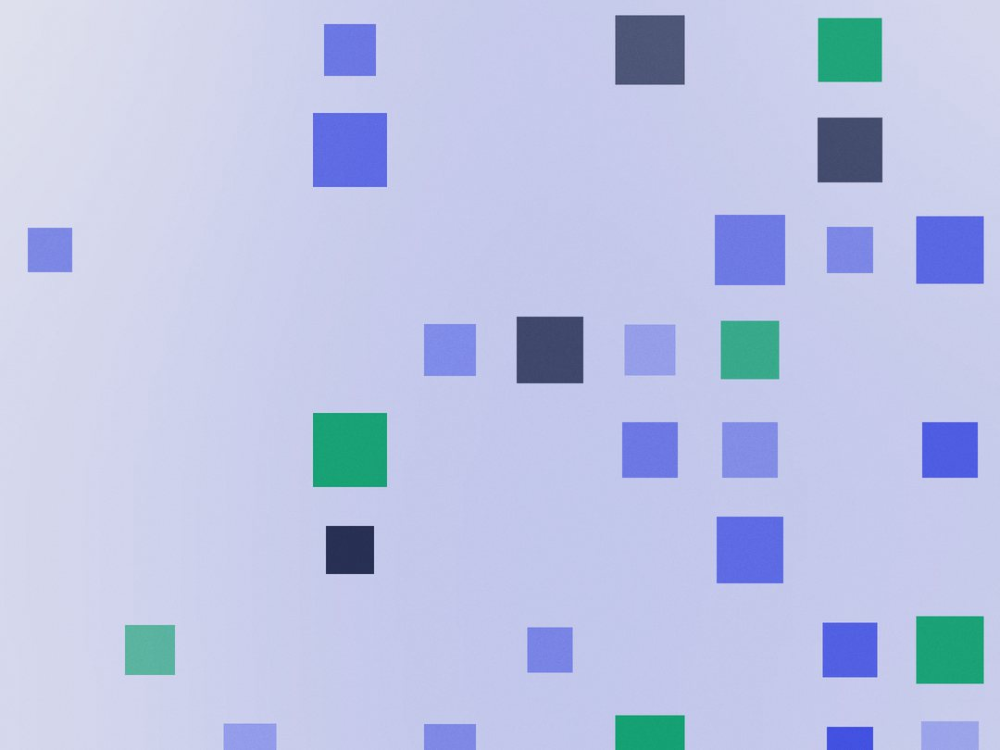

Accueil / En images
Le centre en images
Salles, laboratoires, projets d'apprenants et remise des attestations. Vous pouvez aussi venir visiter sans rendez vous, du lundi au samedi.








Ce que vous ne voyez pas sur les photos
Une salle de classe ressemble à une salle de classe. Ce qui distingue un centre d'un autre, ce sont des choses qui ne se photographient pas.
- Vingt apprenants maximum par groupe, jamais plus, même quand la demande dépasse les places
- Un poste par apprenant, personne ne partage un clavier
- Un groupe électrogène qui démarre en moins d'une minute lors des coupures
- Des programmes revus chaque année avec les entreprises partenaires
- Des formateurs qui exercent encore leur métier en parallèle
- Un suivi des anciens à trois et six mois, qui sert à calculer honnêtement notre taux de placement